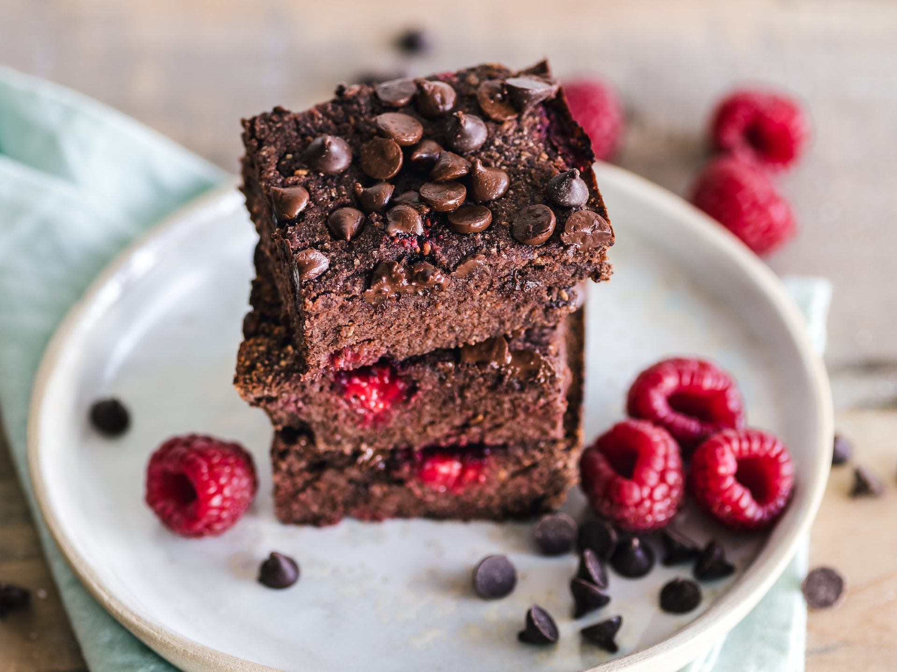

Malzemeler
- 2 Yumurta
- 2 Adet Olgunlaşmış Muz
- 2 Yemek Kaşığı Hindistan Cevizi
- 2 Yemek Kaşığı Kakao
- İstenildiği Kadar Ceviz, Badem ve Fındık
- Göz Kararı Bitter Damla Çikolata
- 1 Paket Kabartma Tozu
Üzeri İçin
- 3 Yemek Kaşığı Süt
- 1.5 Yemek Kaşığı Bitter Damla Çikolata
Tarifimizin Yapılışı
Bir dilimi sadece 95 kalori olan antrenman öncesinde veya canınızın tatlı istediği bir ara öğünde kahvenin, sütün yanına nefis olacak bir tarif
- Oda ısısında beklettiğiniz yumurtaları köpük köpük olana dek çırpın
- Olgunlaşmış muzları bir kapta ezin.
- Ve bütün malzemeleri birleştirin.
- Yağlı kâğıt serdiğiniz küçük dörtgen kaba dökün ve önceden ısıttığınız 180 derece fırında 25-30 dk pişiriniz.
- Soğuduktan sonra, 2 yemek kaşığı ısıttığınız (kaynatmadan) sütle bitter çikolatayı eritip üzerine dökünüz ve hazıırr😍